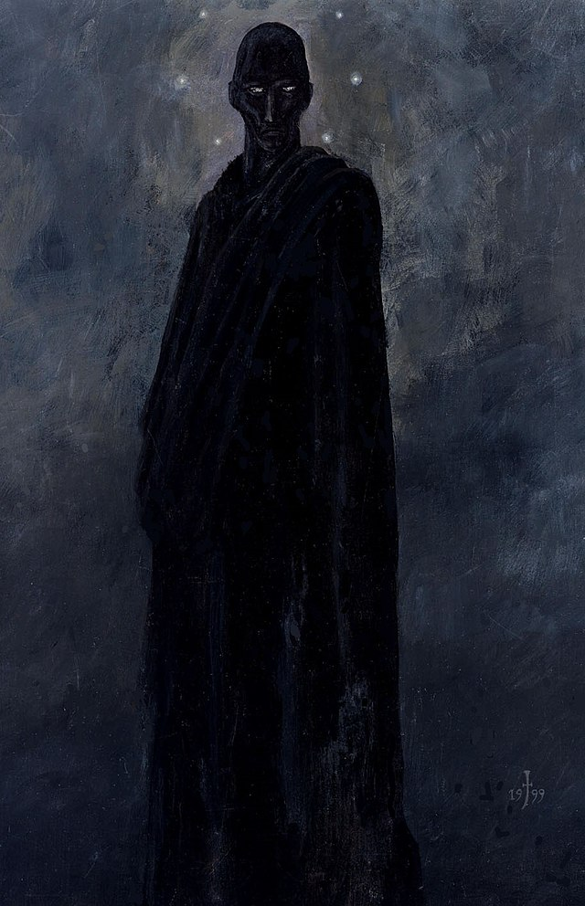

Treta macabra de la que todos somos cómplices.
El diablo se pisa la cola y nuestra risa lo indulta,
Las naciones contemplan atentos su obra.
El silencio lapida a la Verdad con la hipocresía,
Como una adultera relación entre lo divino y lo profano.
Gog de Magog es coronado por El Hombre de Negro.
Desde tu buhardilla contemplamos el ocaso de este eón,
Y él se pregunta, ¿valió la pena por ellos morir?
Te llevas las manos a los ojos para no ver cuando sangren,
Y lo único que Perdurará será su existencia con la caída.
